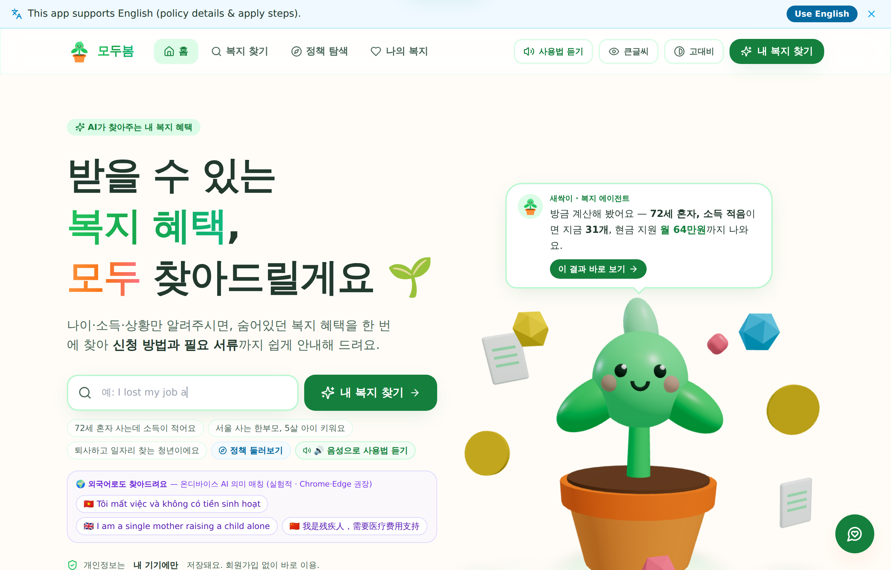
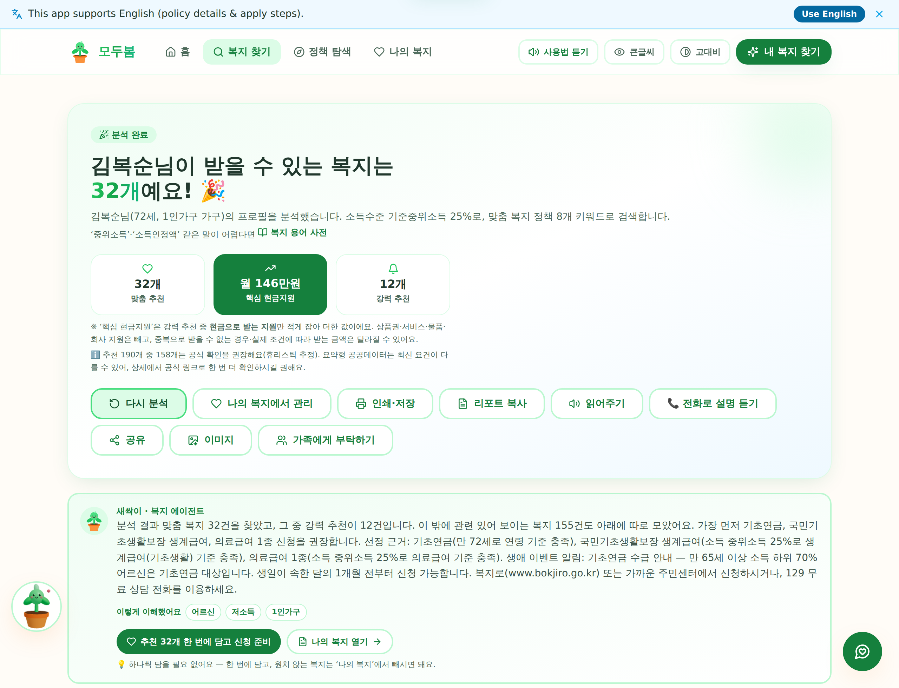
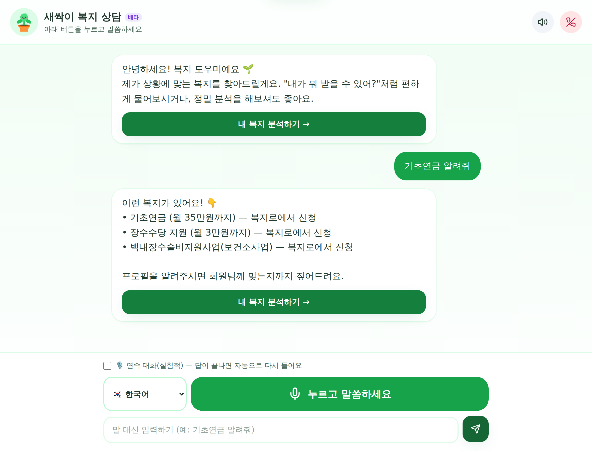
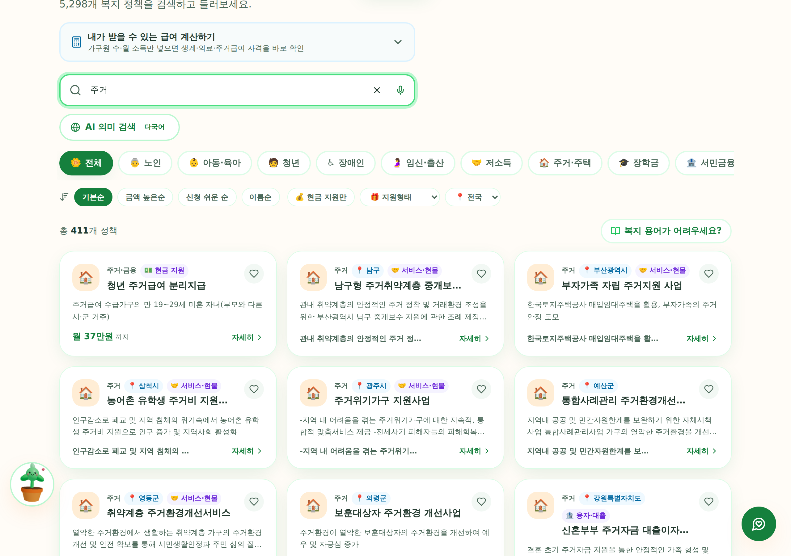

개발 동기 MOTIVATION
복지 예산은 늘어나는데, 정작 필요한 사람이 못 받는다.
🗂️
흩어진 정보
중앙·지자체 5,000여 제도가 사이트마다 따로
📄
복잡한 절차
서류 발급·방문·양식 작성에서 포기
👵
디지털 격차
어르신·외국인은 검색조차 어려움
그래서 발견 → 이해 → 신청을 한 흐름으로 잇고, 어려운 절차는 AI 에이전트가 대신 수행하도록 만들었습니다.
서비스 개요 · 동작 흐름 HOW IT WORKS

프로필 입력 또는 “내가 뭐 받을 수 있어?” 한 문장이면 충분합니다. 자격을 판정해 맞춤 복지를 고르고, 필요한 서류를 정부24에서 자동 발급하고, 복지로 신청서까지 채워 둡니다.
01
프로필 ·
자연어 입력
자연어 입력
▶
02
자격 판정
4단계 게이트
4단계 게이트
▶
03
맞춤 추천 ·
예상 금액
예상 금액
▶
04
서류 자동
발급 RPA
발급 RPA
▶
05
신청서
자동 작성
자동 작성
▶
06
본인 확인
후 제출
후 제출
※ 마지막 제출은 반드시 사용자가 — 본인인증·최종 제출은 법적 행위라 자동화하지 않습니다(human-in-the-loop).
활용 AI AI STACK
🧠
온디바이스 다국어 의미 검색
multilingual-e5-small 임베딩을 브라우저에서 직접 실행(transformers.js). 한국어·영어·베트남어 등 교차 언어 검색 — 개인정보를 서버로 보내지 않습니다.🕸️
LangGraph 10노드 에이전트 + 하이브리드 RAG
프로필 분석 → 정책 검색 → 자격 판별 → 재판별 루프 → 가이드 생성까지 상태 그래프로 오케스트레이션. 검색은
BM25 + 임베딩 RRF 결합(ChromaDB).💬
LLM 3중 폴백 · 키 없이도 동작
Gemini 2.5 Flash → Groq → Claude 자동 폴백, 실패 시 규칙 기반 모드로 전 기능 유지 — 시연이 멈추지 않습니다.🤖
웹 에이전트 RPA — 화면을 읽고 스스로 채움
접근성 트리(WAI-ARIA) 의미 매칭으로 라벨이 바뀌어도 칸을 찾고, 막히면 LLM ReAct 재계획으로 복구. 실패 순간 화면 구조를 개인정보 없이 남겨 스스로 고칩니다.
실제 화면 SCREENS

한 문장 입력 → 맞춤 복지 32개 · 월 예상 금액까지 즉시 산출

전화 걸듯 말로 묻는 통화형 상담

5,298건에서 조건·의미로 좁히기(‘주거’ 411건)
기대 효과 IMPACT
1
몰라서 놓치는 복지 감소 — 흩어진 5,300여 제도를 한 번에 대조해 “내 것”만 추립니다.
2
신청 포기율 완화 — 서류 발급·양식 작성이라는 가장 큰 장벽을 자동화가 넘어 줍니다.
3
복지 현장의 상담 보조 — 복지관·주민센터에서 어르신 상담 도구로 그대로 활용할 수 있습니다.
개발 결과 RESULTS
5,300여 건
전국 복지 실데이터
큐레이션 190 + 공공데이터 5,143
15종
서류 자동 발급
정부24 · 건강보험 · 고용24
7개 언어
온디바이스 AI 검색
외국인 · 다문화 사각지대
0원
서버비 · 회원가입
정적 배포 + 온디바이스 연산
1,812
자동 품질 테스트
프론트 1,415 + 백엔드 397
0건
접근성 위반(axe)
전 화면 · 고대비 · 큰글씨 검사
지금 바로 쓸 수 있는 상태로 배포되어 있습니다 — 웹은 설치 없이 전 기능, 서류 자동발급이 필요하면 Windows 앱을 내려받아 확장합니다.
특징 WHAT MAKES IT DIFFERENT
정직성을 코드로 강제
확인되지 않은 발급을 ‘완료’로 표시하지 않고, 가짜 데이터·가짜 성공을 만들지 않습니다. 미확인은 ⚠️ 확인 필요로 정직하게.
어르신을 1순위 사용자로
전화 걸듯 말로 묻는 통화형 상담, 큰글씨·고대비·읽어주기. 설치·회원가입 없이 링크 하나로 시작.
개인정보가 기기를 안 떠남
AI 의미 검색·자격 판정·금액 계산이 전부 브라우저 안에서. 서버 없이도 완전 동작하는 설계.
추천에서 끝내지 않음
서류 발급 → 신청서 작성 → 사후 관리까지. 실제 정부 사이트를 브라우저 자동화로 직접 수행합니다.
실데이터만 씁니다
공공데이터포털 실데이터 5,143건 + 공식 출처로 검증한 큐레이션 190건. 없는 제도를 지어내지 않습니다.
키 없이도 멈추지 않음
LLM 키가 없거나 API가 실패해도 규칙 기반 모드로 전 기능 유지 — 시연 중 끊김이 없습니다.
시스템 구조 ARCHITECTURE
사용자 기기 브라우저
React 18TypeScripttransformers.js 임베딩복지 판정 엔진zustandPWA
자격 판정 · 금액 계산 · AI 의미 검색이 전부 기기 안에서 — 서버 없이도 전 기능 동작(정적 배포).
▼ 있으면 자동화가 켜집니다
에이전트 서버 선택
FastAPILangGraph 10노드ChromaDB 하이브리드 RAGGemini · Groq · Claude
프로필 분석 → 검색 → 자격 판별 → 재판별 루프 → 가이드 생성을 상태 그래프로 수행.
▼
실제 정부 사이트 Playwright RPA
정부24복지로국민건강보험고용24대법원 전자가족관계
데스크탑 앱이 실제 브라우저를 직접 조작해 서류를 발급하고 신청서를 채웁니다.
자동화 — 신청까지 대신 AGENT RPA
🔐
정부24 로그인 단 1회
간편인증(카카오·PASS 등) 폼을 자동으로 채우고, 폰 승인만 사용자가 합니다.
📄
서류 연쇄 자동 발급
등본·가족관계·소득·건강보험 등 15종을 같은 로그인으로 이어서 발급 → 내 서류함에 정리.
✍️
복지로 신청서 자동 작성
서비스 딥링크로 이동해 이름·생년월일·연락처를 채우고 서류를 첨부합니다.
✋
제출 직전 정지
최종 제출은 반드시 사용자가 — 비가역·법적 행위라 의도적으로 자동화하지 않았습니다.
신청 이후에도 신청일·정책 갱신 주기로 서류 미비·갱신 임박을 스스로 점검해 알려 줍니다. 발급이 확인되지 않으면 완료로 표시하지 않습니다.
현장 검증 FIELD TEST
경산시 노인복지센터

어르신과 함께 직접 사용 
직접 써 보신 어르신과 함께
실제 어르신들과 사용해 보며 글자 크기·말로 묻기·다음 할 일 안내를 다듬었습니다. “버튼이 뭔지 모르겠다”는 말이 곧 다음 커밋이 되었습니다.
팀 · 링크 TEAM & DEMO
대학
영남대학교
팀명
팀 모두봄
팀장
김주형
팀원
류다영 · 신주현 · 이준영 · 장지웅
문의
6wngud@gmail.com
데모
biocode67.github.io/modoo-bom
코드
github.com/BioCode67/modoo-bom
지금 바로 체험하기